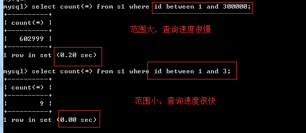
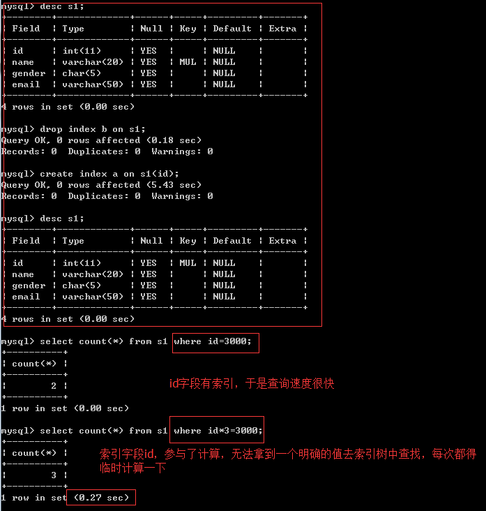
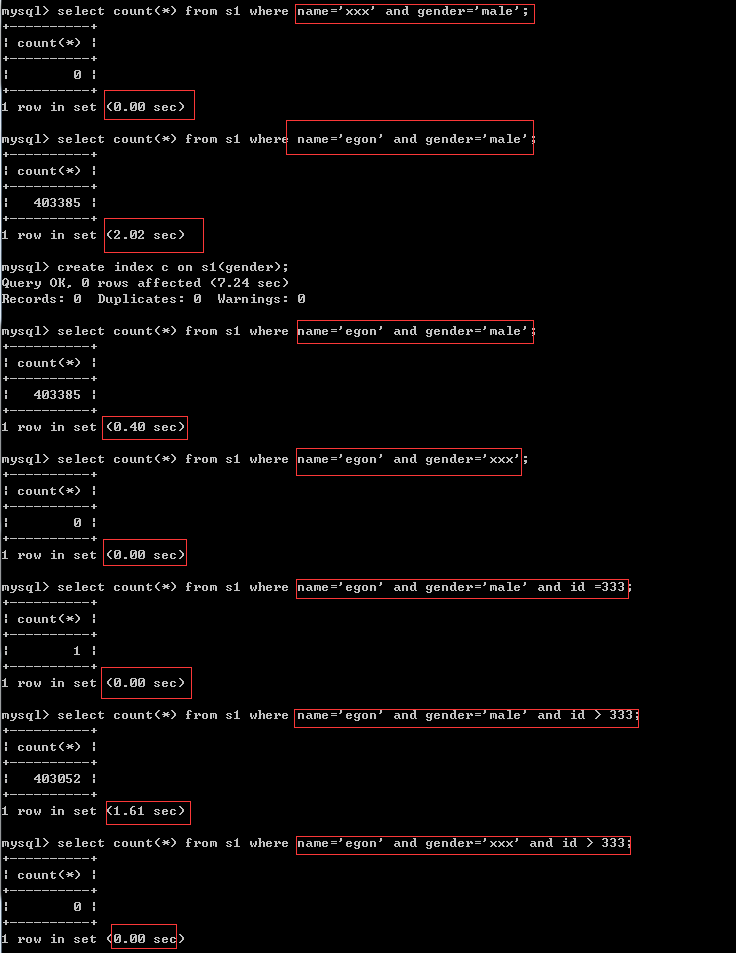
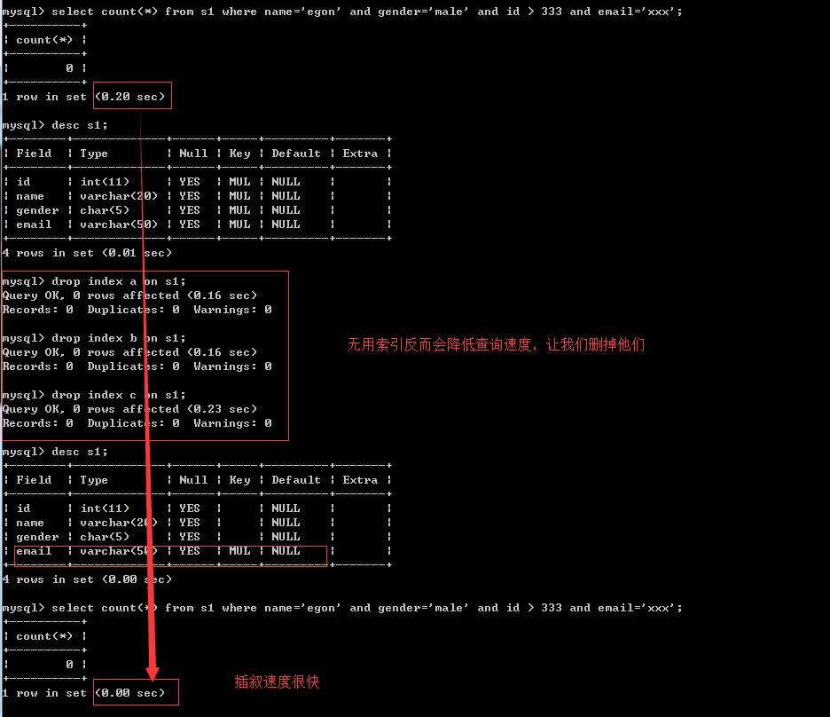

七 正确使用索引
一 索引未命中
并不是说我们创建了索引就一定会加快查询速度，若想利用索引达到预想的提高查询速度的效果，我们在添加索引时，必须遵循以下问题
1 范围问题，或者说条件不明确，条件中出现这些符号或关键字：>、>=、<、<=、!= 、between...and...、like、
大于号、小于号
不等于！=

between ...and...

like
2 尽量选择区分度高的列作为索引,区分度的公式是count(distinct col)/count(*)，表示字段不重复的比例，比例越大我们扫描的记录数越少，唯一键的区分度是1，而一些状态、性别字段可能在大数据面前区分度就是0，那可能有人会问，这个比例有什么经验值吗？使用场景不同，这个值也很难确定，一般需要join的字段我们都要求是0.1以上，即平均1条扫描10条记录
#先把表中的索引都删除，让我们专心研究区分度的问题
#先把表中的索引都删除，让我们专心研究区分度的问题
mysql> desc s1;
+--------+-------------+------+-----+---------+-------+
| Field | Type | Null | Key | Default | Extra |
+--------+-------------+------+-----+---------+-------+
| id | int(11) | YES | MUL | NULL | |
| name | varchar(20) | YES | | NULL | |
| gender | char(5) | YES | | NULL | |
| email | varchar(50) | YES | MUL | NULL | |
+--------+-------------+------+-----+---------+-------+
4 rows in set (0.00 sec)
mysql> drop index a on s1;
Query OK, 0 rows affected (0.20 sec)
Records: 0 Duplicates: 0 Warnings: 0
mysql> drop index d on s1;
Query OK, 0 rows affected (0.18 sec)
Records: 0 Duplicates: 0 Warnings: 0
mysql> desc s1;
+--------+-------------+------+-----+---------+-------+
| Field | Type | Null | Key | Default | Extra |
+--------+-------------+------+-----+---------+-------+
| id | int(11) | YES | | NULL | |
| name | varchar(20) | YES | | NULL | |
| gender | char(5) | YES | | NULL | |
| email | varchar(50) | YES | | NULL | |
+--------+-------------+------+-----+---------+-------+
4 rows in set (0.00 sec)

分析原因
我们编写存储过程为表s1批量添加记录，name字段的值均为egon，也就是说name这个字段的区分度很低（gender字段也是一样的，我们稍后再搭理它）
回忆b+树的结构，查询的速度与树的高度成反比，要想将树的高低控制的很低，需要保证：在某一层内数据项均是按照从左到右，从小到大的顺序依次排开，即左1<左2<左3<...
而对于区分度低的字段，无法找到大小关系，因为值都是相等的，毫无疑问，还想要用b+树存放这些等值的数据，只能增加树的高度，字段的区分度越低，则树的高度越高。极端的情况，索引字段的值都一样，那么b+树几乎成了一根棍。本例中就是这种极端的情况，name字段所有的值均为'egon'
#现在我们得出一个结论：为区分度低的字段建立索引，索引树的高度会很高，然而这具体会带来什么影响呢？？？
#1：如果条件是name='xxxx',那么肯定是可以第一时间判断出'xxxx'是不在索引树中的（因为树中所有的值均为'egon’），所以查询速度很快
#2：如果条件正好是name='egon',查询时，我们永远无法从树的某个位置得到一个明确的范围，只能往下找，往下找，往下找。。。这与全表扫描的IO次数没有多大区别，所以速度很慢
3 =和in可以乱序，比如a = 1 and b = 2 and c = 3 建立(a,b,c)索引可以任意顺序，mysql的查询优化器会帮你优化成索引可以识别的形式
4 索引列不能参与计算，保持列“干净”，比如from_unixtime(create_time) = ’2014-05-29’就不能使用到索引，原因很简单，b+树中存的都是数据表中的字段值，但进行检索时，需要把所有元素都应用函数才能比较，显然成本太大。所以语句应该写成create_time = unix_timestamp(’2014-05-29’)

5 and/or
#1、and与or的逻辑
条件1 and 条件2:所有条件都成立才算成立，但凡要有一个条件不成立则最终结果不成立
条件1 or 条件2:只要有一个条件成立则最终结果就成立
#2、and的工作原理
条件：
a = 10 and b = 'xxx' and c > 3 and d =4
索引：
制作联合索引(d,a,b,c)
工作原理:
对于连续多个and：mysql会按照联合索引，从左到右的顺序找一个区分度高的索引字段(这样便可以快速锁定很小的范围)，加速查询，即按照d—>a->b->c的顺序
#3、or的工作原理
条件：
a = 10 or b = 'xxx' or c > 3 or d =4
索引：
制作联合索引(d,a,b,c)
工作原理:
对于连续多个or：mysql会按照条件的顺序，从左到右依次判断，即a->b->c->d

在左边条件成立但是索引字段的区分度低的情况下（name与gender均属于这种情况），会依次往右找到一个区分度高的索引字段，加速查询


经过分析，在条件为name='egon' and gender='male' and id>333 and email='xxx'的情况下，我们完全没必要为前三个条件的字段加索引，因为只能用上email字段的索引，前三个字段的索引反而会降低我们的查询效率

6 最左前缀匹配原则（详见第八小节），非常重要的原则，对于组合索引mysql会一直向右匹配直到遇到范围查询(>、<、between、like)就停止匹配(指的是范围大了，有索引速度也慢)，比如a = 1 and b = 2 and c > 3 and d = 4 如果建立(a,b,c,d)顺序的索引，d是用不到索引的，如果建立(a,b,d,c)的索引则都可以用到，a,b,d的顺序可以任意调整。

7 其他情况
- 使用函数
select * from tb1 where reverse(email) = 'egon';
- 类型不一致
如果列是字符串类型，传入条件是必须用引号引起来，不然...
select * from tb1 where email = 999;
#排序条件为索引，则select字段必须也是索引字段，否则无法命中
- order by
select name from s1 order by email desc;
当根据索引排序时候，select查询的字段如果不是索引，则速度仍然很慢
select email from s1 order by email desc;
特别的：如果对主键排序，则还是速度很快：
select * from tb1 order by nid desc;
- 组合索引最左前缀
如果组合索引为：(name,email)
name and email -- 命中索引
name -- 命中索引
email -- 未命中索引
- count(1)或count(列)代替count(*)在mysql中没有差别了
- create index xxxx on tb(title(19)) #text类型，必须制定长度
二 其他注意事项
- 避免使用select *
- count(1)或count(列) 代替 count(*)
- 创建表时尽量时 char 代替 varchar
- 表的字段顺序固定长度的字段优先
- 组合索引代替多个单列索引（经常使用多个条件查询时）
- 尽量使用短索引
- 使用连接（JOIN）来代替子查询(Sub-Queries)
- 连表时注意条件类型需一致
- 索引散列值（重复少）不适合建索引，例：性别不适合
八 联合索引与覆盖索引
一 联合索引
联合索引时指对表上的多个列合起来做一个索引。联合索引的创建方法与单个索引的创建方法一样，不同之处在仅在于有多个索引列，如下
mysql> create table t(
-> a int,
-> b int,
-> primary key(a),
-> key idx_a_b(a,b)
-> );
Query OK, 0 rows affected (0.11 sec)
那么何时需要使用联合索引呢？在讨论这个问题之前，先来看一下联合索引内部的结果。从本质上来说，联合索引就是一棵B+树，不同的是联合索引的键值得数量不是1，而是>=2。接着来讨论两个整型列组成的联合索引，假定两个键值得名称分别为a、b如图
可以看到这与我们之前看到的单个键的B+树并没有什么不同，键值都是排序的，通过叶子结点可以逻辑上顺序地读出所有数据，就上面的例子来说，即（1,1），（1,2），（2,1），（2,4），（3,1），（3,2），数据按（a,b）的顺序进行了存放。
因此，对于查询select * from table where a=xxx and b=xxx, 显然是可以使用(a,b) 这个联合索引的，对于单个列a的查询select * from table where a=xxx,也是可以使用（a,b）这个索引的。
但对于b列的查询select * from table where b=xxx,则不可以使用（a,b） 索引，其实你不难发现原因，叶子节点上b的值为1、2、1、4、1、2显然不是排序的，因此对于b列的查询使用不到(a,b) 索引
联合索引的第二个好处是在第一个键相同的情况下，已经对第二个键进行了排序处理，例如在很多情况下应用程序都需要查询某个用户的购物情况，并按照时间进行排序，最后取出最近三次的购买记录，这时使用联合索引可以帮我们避免多一次的排序操作，因为索引本身在叶子节点已经排序了，如下
#===========准备表==============
create table buy_log(
userid int unsigned not null,
buy_date date
);
insert into buy_log values
(1,'2009-01-01'),
(2,'2009-01-01'),
(3,'2009-01-01'),
(1,'2009-02-01'),
(3,'2009-02-01'),
(1,'2009-03-01'),
(1,'2009-04-01');
alter table buy_log add key(userid);
alter table buy_log add key(userid,buy_date);
#===========验证==============
mysql> show create table buy_log;
| buy_log | CREATE TABLE `buy_log` (
`userid` int(10) unsigned NOT NULL,
`buy_date` date DEFAULT NULL,
KEY `userid` (`userid`),
KEY `userid_2` (`userid`,`buy_date`)
) ENGINE=InnoDB DEFAULT CHARSET=utf8 |
#可以看到possible_keys在这里有两个索引可以用，分别是单个索引userid与联合索引userid_2,但是优化器最终选择了使用的key是userid因为该索引的叶子节点包含单个键值，所以理论上一个页能存放的记录应该更多
mysql> explain select * from buy_log where userid=2;
+----+-------------+---------+------+-----------------+--------+---------+-------+------+-------+
| id | select_type | table | type | possible_keys | key | key_len | ref | rows | Extra |
+----+-------------+---------+------+-----------------+--------+---------+-------+------+-------+
| 1 | SIMPLE | buy_log | ref | userid,userid_2 | userid | 4 | const | 1 | |
+----+-------------+---------+------+-----------------+--------+---------+-------+------+-------+
1 row in set (0.00 sec)
#接着假定要取出userid为1的最近3次的购买记录，用的就是联合索引userid_2了，因为在这个索引中，在userid=1的情况下，buy_date都已经排序好了
mysql> explain select * from buy_log where userid=1 order by buy_date desc limit 3;
+----+-------------+---------+------+-----------------+----------+---------+-------+------+--------------------------+
| id | select_type | table | type | possible_keys | key | key_len | ref | rows | Extra |
+----+-------------+---------+------+-----------------+----------+---------+-------+------+--------------------------+
| 1 | SIMPLE | buy_log | ref | userid,userid_2 | userid_2 | 4 | const | 4 | Using where; Using index |
+----+-------------+---------+------+-----------------+----------+---------+-------+------+--------------------------+
1 row in set (0.00 sec)
#ps：如果extra的排序显示是Using filesort，则意味着在查出数据后需要二次排序
#对于联合索引（a,b）,下述语句可以直接使用该索引，无需二次排序
select ... from table where a=xxx order by b;
#然后对于联合索引(a,b,c)来首，下列语句同样可以直接通过索引得到结果
select ... from table where a=xxx order by b;
select ... from table where a=xxx and b=xxx order by c;
#但是对于联合索引(a,b,c)，下列语句不能通过索引直接得到结果，还需要自己执行一次filesort操作，因为索引（a，c)并未排序
select ... from table where a=xxx order by c;
二 覆盖索引
InnoDB存储引擎支持覆盖索引（covering index，或称索引覆盖），即从辅助索引中就可以得到查询记录，而不需要查询聚集索引中的记录。
使用覆盖索引的一个好处是：辅助索引不包含整行记录的所有信息，故其大小要远小于聚集索引，因此可以减少大量的IO操作
注意：覆盖索引技术最早是在InnoDB Plugin中完成并实现，这意味着对于InnoDB版本小于1.0的，或者MySQL数据库版本为5.0以下的，InnoDB存储引擎不支持覆盖索引特性
对于InnoDB存储引擎的辅助索引而言，由于其包含了主键信息，因此其叶子节点存放的数据为（primary key1，priamey key2，...,key1，key2，...）。例如
select age from s1 where id=123 and name = 'egon'; #id字段有索引，但是name字段没有索引,该sql命中了索引，但未覆盖，需要去聚集索引中再查找详细信息。
最牛逼的情况是，索引字段覆盖了所有，那全程通过索引来加速查询以及获取结果就ok了
mysql> desc s1;
+--------+-------------+------+-----+---------+-------+
| Field | Type | Null | Key | Default | Extra |
+--------+-------------+------+-----+---------+-------+
| id | int(11) | NO | | NULL | |
| name | varchar(20) | YES | | NULL | |
| gender | char(6) | YES | | NULL | |
| email | varchar(50) | YES | | NULL | |
+--------+-------------+------+-----+---------+-------+
4 rows in set (0.21 sec)
mysql> explain select name from s1 where id=1000; #没有任何索引
+----+-------------+-------+------------+------+---------------+------+---------+------+---------+----------+-------------+
| id | select_type | table | partitions | type | possible_keys | key | key_len | ref | rows | filtered | Extra |
+----+-------------+-------+------------+------+---------------+------+---------+------+---------+----------+-------------+
| 1 | SIMPLE | s1 | NULL | ALL | NULL | NULL | NULL | NULL | 2688336 | 10.00 | Using where |
+----+-------------+-------+------------+------+---------------+------+---------+------+---------+----------+-------------+
1 row in set, 1 warning (0.00 sec)
mysql> create index idx_id on s1(id); #创建索引
Query OK, 0 rows affected (4.16 sec)
Records: 0 Duplicates: 0 Warnings: 0
mysql> explain select name from s1 where id=1000; #命中辅助索引，但是未覆盖索引，还需要从聚集索引中查找name
+----+-------------+-------+------------+------+---------------+--------+---------+-------+------+----------+-------+
| id | select_type | table | partitions | type | possible_keys | key | key_len | ref | rows | filtered | Extra |
+----+-------------+-------+------------+------+---------------+--------+---------+-------+------+----------+-------+
| 1 | SIMPLE | s1 | NULL | ref | idx_id | idx_id | 4 | const | 1 | 100.00 | NULL |
+----+-------------+-------+------------+------+---------------+--------+---------+-------+------+----------+-------+
1 row in set, 1 warning (0.08 sec)
mysql> explain select id from s1 where id=1000; #在辅助索引中就找到了全部信息，Using index代表覆盖索引
+----+-------------+-------+------------+------+---------------+--------+---------+-------+------+----------+-------------+
| id | select_type | table | partitions | type | possible_keys | key | key_len | ref | rows | filtered | Extra |
+----+-------------+-------+------------+------+---------------+--------+---------+-------+------+----------+-------------+
| 1 | SIMPLE | s1 | NULL | ref | idx_id | idx_id | 4 | const | 1 | 100.00 | Using index |
+----+-------------+-------+------------+------+---------------+--------+---------+-------+------+----------+-------------+
1 row in set, 1 warning (0.03 sec)
覆盖索引的另外一个好处是对某些统计问题而言的。基于上一小结创建的表buy_log,查询计划如下
mysql> explain select count(*) from buy_log;
+----+-------------+---------+-------+---------------+--------+---------+------+------+-------------+
| id | select_type | table | type | possible_keys | key | key_len | ref | rows | Extra |
+----+-------------+---------+-------+---------------+--------+---------+------+------+-------------+
| 1 | SIMPLE | buy_log | index | NULL | userid | 4 | NULL | 7 | Using index |
+----+-------------+---------+-------+---------------+--------+---------+------+------+-------------+
1 row in set (0.00 sec)
innodb存储引擎并不会选择通过查询聚集索引来进行统计。由于buy_log表有辅助索引，而辅助索引远小于聚集索引，选择辅助索引可以减少IO操作，故优化器的选择如上key为userid辅助索引
对于（a,b）形式的联合索引，一般是不可以选择b中所谓的查询条件。但如果是统计操作，并且是覆盖索引，则优化器还是会选择使用该索引，如下
#联合索引userid_2（userid,buy_date）,一般情况，我们按照buy_date是无法使用该索引的，但特殊情况下：查询语句是统计操作，且是覆盖索引，则按照buy_date当做查询条件时，也可以使用该联合索引
mysql> explain select count(*) from buy_log where buy_date >= '2011-01-01' and buy_date < '2011-02-01';
+----+-------------+---------+-------+---------------+----------+---------+------+------+--------------------------+
| id | select_type | table | type | possible_keys | key | key_len | ref | rows | Extra |
+----+-------------+---------+-------+---------------+----------+---------+------+------+--------------------------+
| 1 | SIMPLE | buy_log | index | NULL | userid_2 | 8 | NULL | 7 | Using where; Using index |
+----+-------------+---------+-------+---------------+----------+---------+------+------+--------------------------+
1 row in set (0.00 sec)
九 查询优化神器-explain
关于explain命令相信大家并不陌生，具体用法和字段含义可以参考官网explain-output，这里需要强调rows是核心指标，绝大部分rows小的语句执行一定很快（有例外，下面会讲到）。所以优化语句基本上都是在优化rows。
执行计划：让mysql预估执行操作(一般正确)
all < index < range < index_merge < ref_or_null < ref < eq_ref < system/const
id,email
慢：
select * from userinfo3 where name='alex'
explain select * from userinfo3 where name='alex'
type: ALL(全表扫描)
select * from userinfo3 limit 1;
快：
select * from userinfo3 where email='alex'
type: const(走索引)
http://blog.itpub.net/29773961/viewspace-1767044/
十 慢查询优化的基本步骤
0.先运行看看是否真的很慢，注意设置SQL_NO_CACHE
1.where条件单表查，锁定最小返回记录表。这句话的意思是把查询语句的where都应用到表中返回的记录数最小的表开始查起，单表每个字段分别查询，看哪个字段的区分度最高
2.explain查看执行计划，是否与1预期一致（从锁定记录较少的表开始查询）
3.order by limit 形式的sql语句让排序的表优先查
4.了解业务方使用场景
5.加索引时参照建索引的几大原则
6.观察结果，不符合预期继续从0分析
十一 慢日志管理
慢日志
- 执行时间 > 10
- 未命中索引
- 日志文件路径
配置：
- 内存
show variables like '%25query%25';
show variables like '%25queries%25';
set global 变量名 = 值
- 配置文件
mysqld --defaults-file='E:\wupeiqi\mysql-5.7.16-winx64\mysql-5.7.16-winx64\my-default.ini'
my.conf内容：
slow_query_log = ON
slow_query_log_file = D:/....
注意：修改配置文件之后，需要重启服务
日志管理
MySQL日志管理
========================================================
错误日志: 记录 MySQL 服务器启动、关闭及运行错误等信息
二进制日志: 又称binlog日志，以二进制文件的方式记录数据库中除 SELECT 以外的操作
查询日志: 记录查询的信息
慢查询日志: 记录执行时间超过指定时间的操作
中继日志： 备库将主库的二进制日志复制到自己的中继日志中，从而在本地进行重放
通用日志： 审计哪个账号、在哪个时段、做了哪些事件
事务日志或称redo日志： 记录Innodb事务相关的如事务执行时间、检查点等
========================================================
一、bin-log
1. 启用
# vim /etc/my.cnf
[mysqld]
log-bin[=dir\[filename]]
# service mysqld restart
2. 暂停
//仅当前会话
SET SQL_LOG_BIN=0;
SET SQL_LOG_BIN=1;
3. 查看
查看全部：
# mysqlbinlog mysql.000002
按时间：
# mysqlbinlog mysql.000002 --start-datetime="2012-12-05 10:02:56"
# mysqlbinlog mysql.000002 --stop-datetime="2012-12-05 11:02:54"
# mysqlbinlog mysql.000002 --start-datetime="2012-12-05 10:02:56" --stop-datetime="2012-12-05 11:02:54"
按字节数：
# mysqlbinlog mysql.000002 --start-position=260
# mysqlbinlog mysql.000002 --stop-position=260
# mysqlbinlog mysql.000002 --start-position=260 --stop-position=930
4. 截断bin-log（产生新的bin-log文件）
a. 重启mysql服务器
b. # mysql -uroot -p123 -e 'flush logs'
5. 删除bin-log文件
# mysql -uroot -p123 -e 'reset master'
二、查询日志
启用通用查询日志
# vim /etc/my.cnf
[mysqld]
log[=dir\[filename]]
# service mysqld restart
三、慢查询日志
启用慢查询日志
# vim /etc/my.cnf
[mysqld]
log-slow-queries[=dir\[filename]]
long_query_time=n
# service mysqld restart
MySQL 5.6:
slow-query-log=1
slow-query-log-file=slow.log
long_query_time=3
查看慢查询日志
测试:BENCHMARK(count,expr)
SELECT BENCHMARK(50000000,2*3);